色のデジタル表現
色を光の三原色（赤・緑・青）の強さの組み合わせで表し、それぞれの強さを数にして0と1で表すこと。
光の三原色
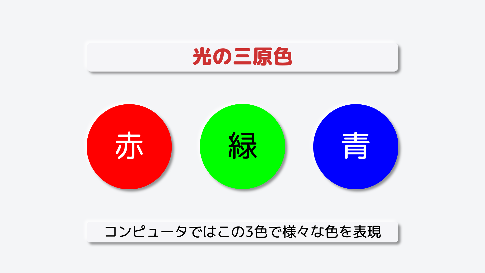
私たちがスマホやパソコンの画面で見ている色。実はこれ赤・緑・青の3つの光の組み合わせで様々な色を表現します。
この3色は、光の三原色と呼ばれます。
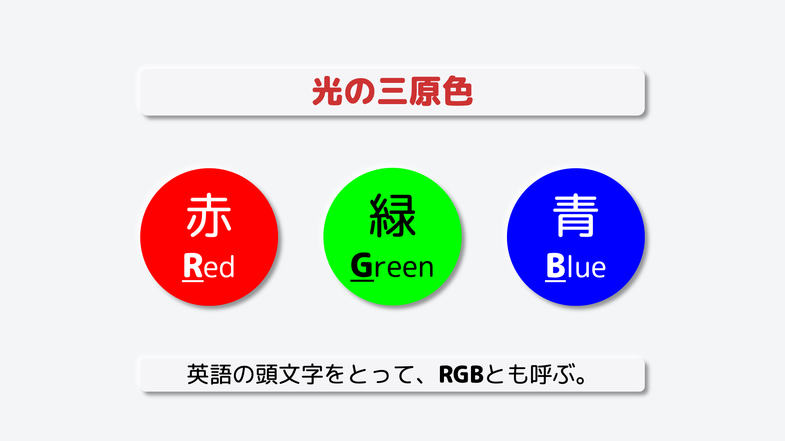
それぞれの色の英語の頭文字をとって、RGBとも呼びます。
加法混色（光を重ねてさまざまな色を作る）
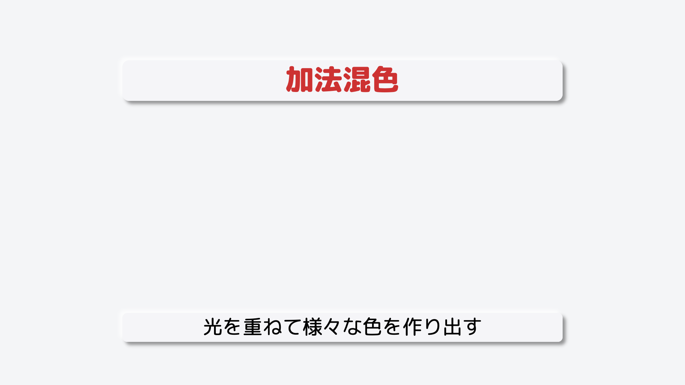
光を重ねて色を作る仕組みを、加法混色といいます。
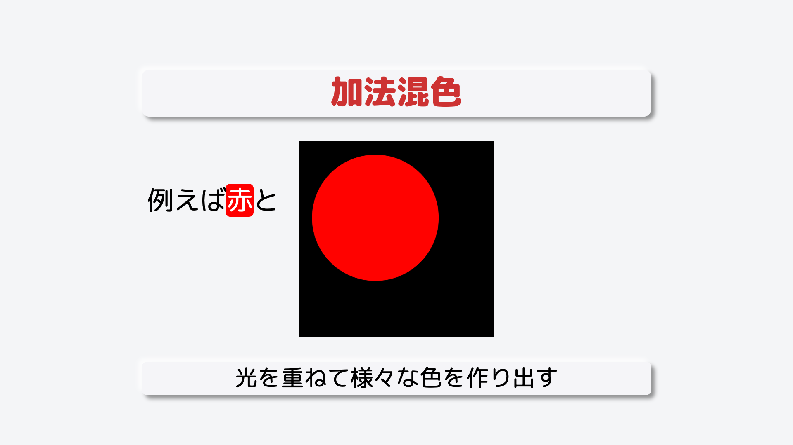
例えば、赤の光と
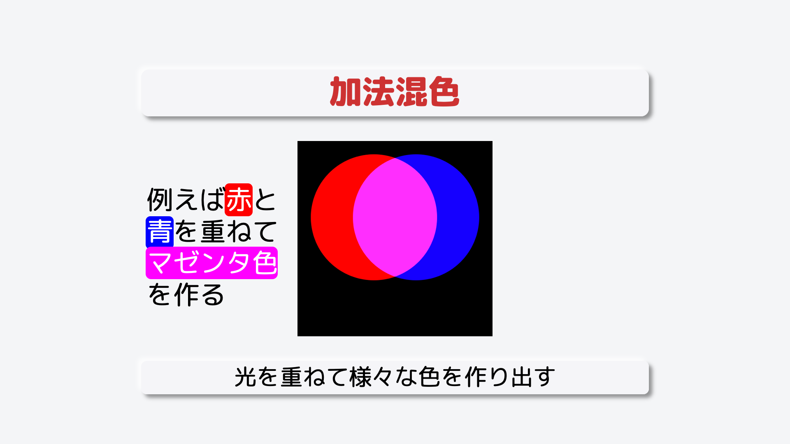
青の光を重ねると、マゼンタ色となります。
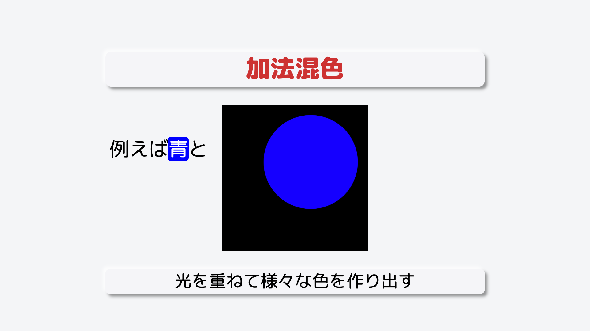
青色の光と
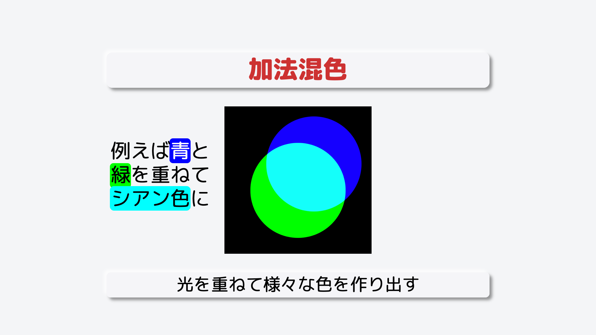
緑の光を重ねると、シアン色となります。
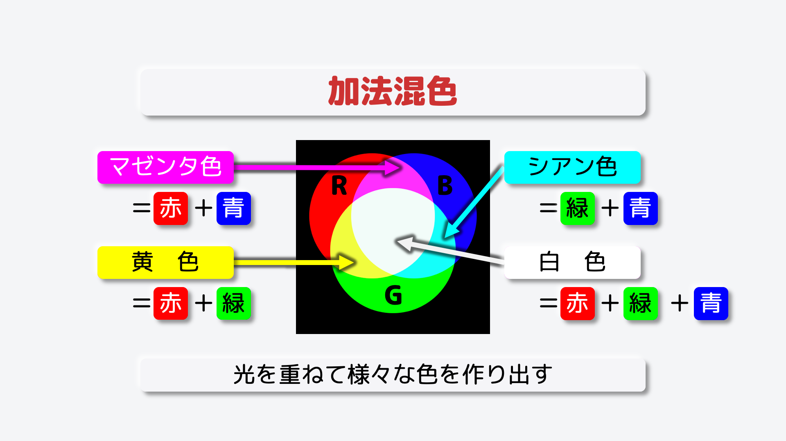
赤と緑を重ねると、黄色。赤・緑・青すべての光を重ねると、白い色となります。
カラーコード
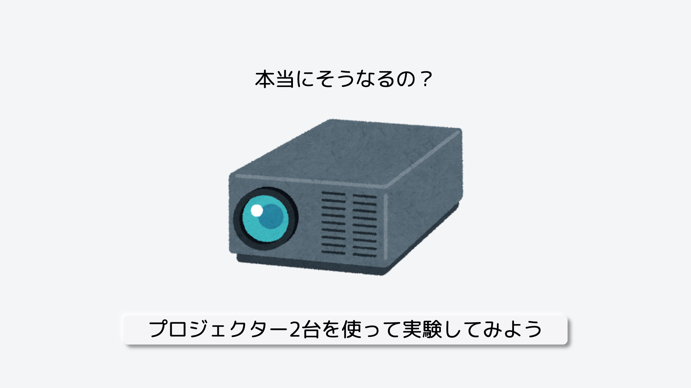
文字のデータを0と1で表したものを、文字コードといったように
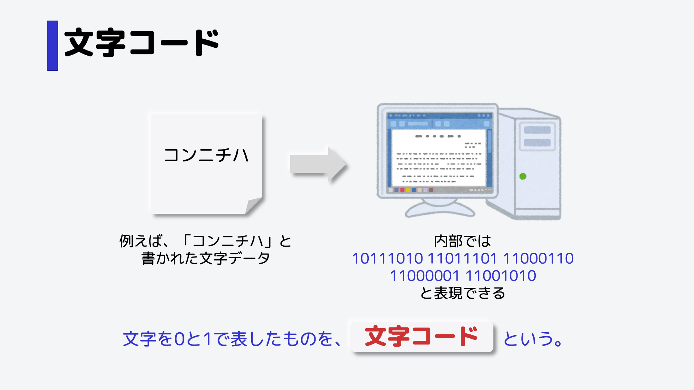
色のデータを0と1で表したものを、カラーコードといいます。
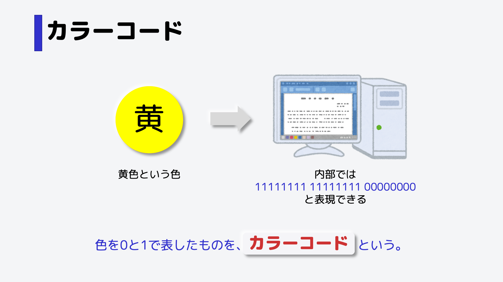
赤・緑・青それぞれの光の強さを変えて、様々な色を作ります。

光がないのを0とし、最大の強さを255として表現します。
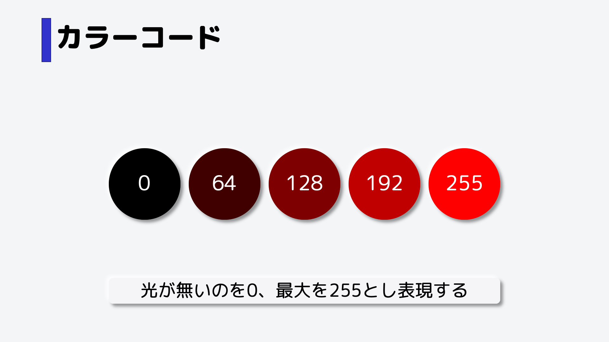
では、黄色のカラーコードを考えていきましょう。赤の光の強さはいくつでしょう。

黄色は、赤色を使うので、最大の強さである255となります。
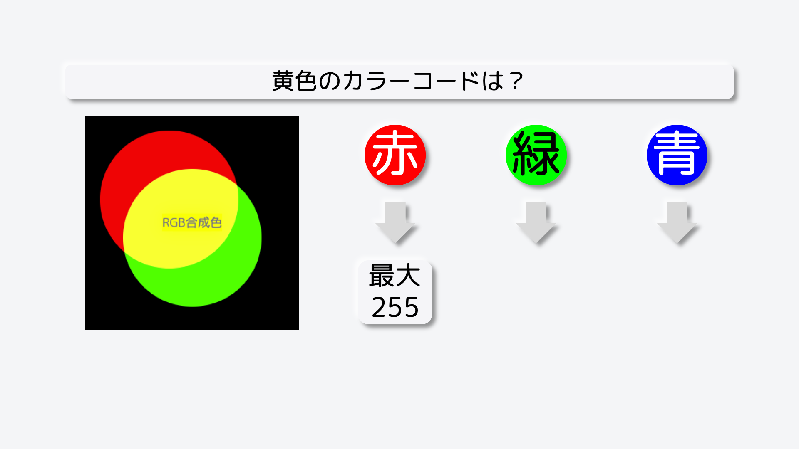
緑色も使うので、最大の強さである255となります。
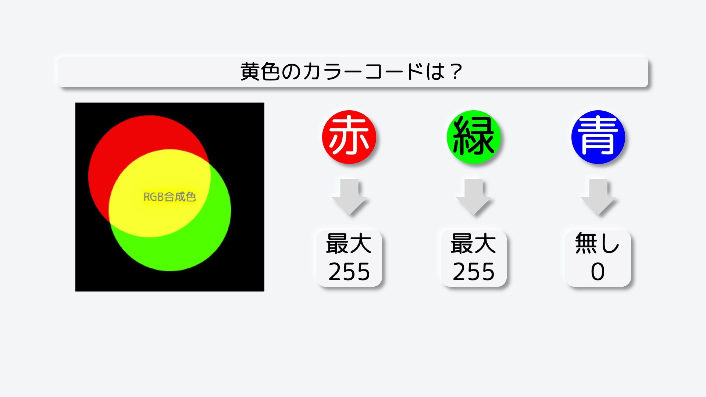
青色は使わないので、無しである0となります。
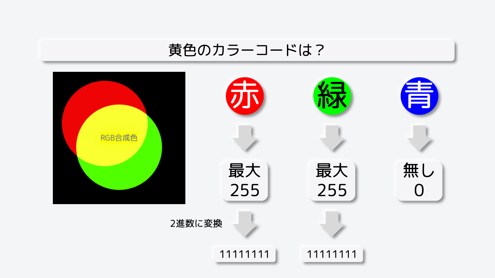
では、これをコード化、つまり2進数に変換していきましょう。赤と緑の数値である255を2進数に変換します。

青の0も2進数に変換します。ここでは8ビット、つまり8桁に揃える必要があるため、ただの0ではなく、00000000となります。
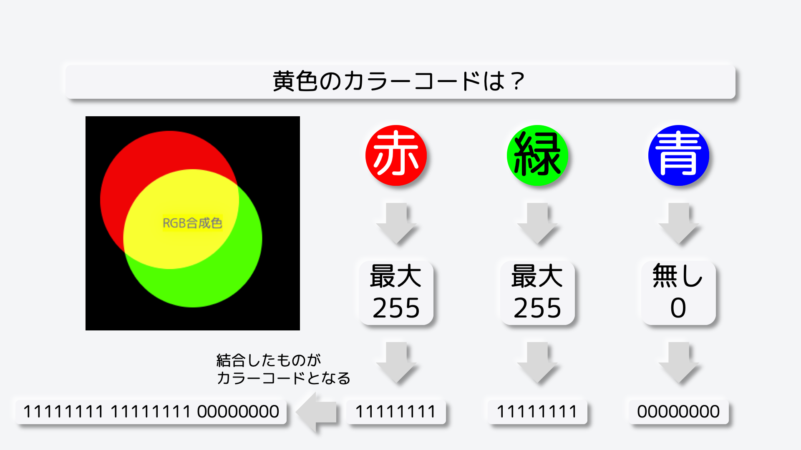
これを結合したものが、カラーコードとなります。

ただし、長くなるので16進数に変換することがほとんどです。画面上部に、手軽に光の重なりやカラーコードを確認できるツールを用意しました。スライダーをたくさん動かして、様々な色を作ってみてください。
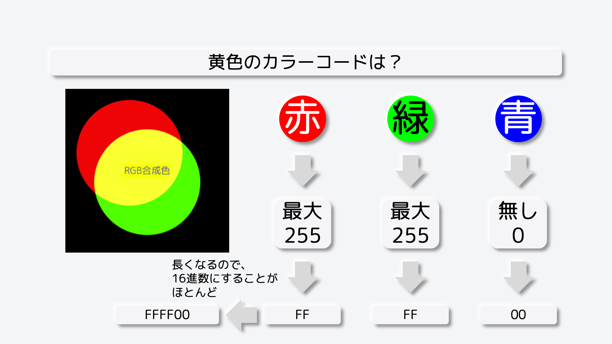
ちなみに、画面を拡大してみると、このように赤と緑と青のランプが敷き詰められています。
それぞれの色の光を調整し、さまざまな内容を表示することができるのです。